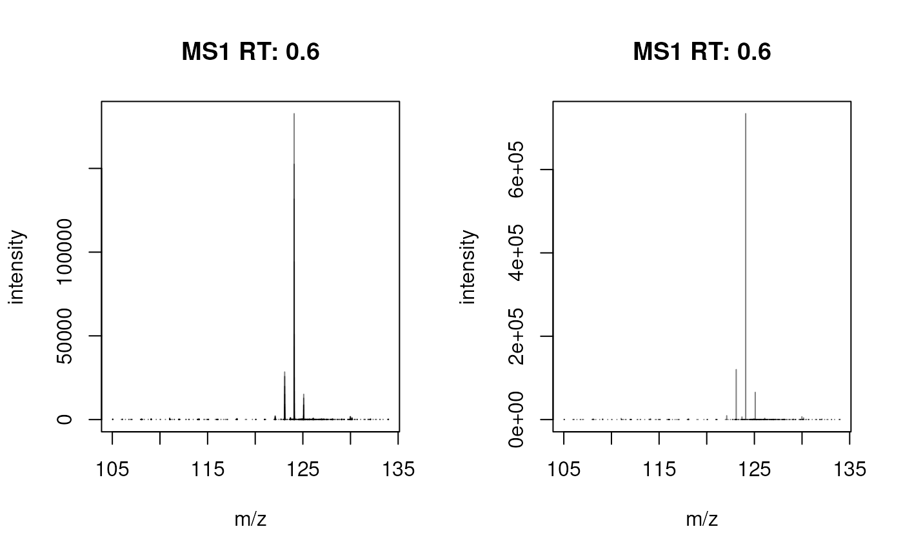
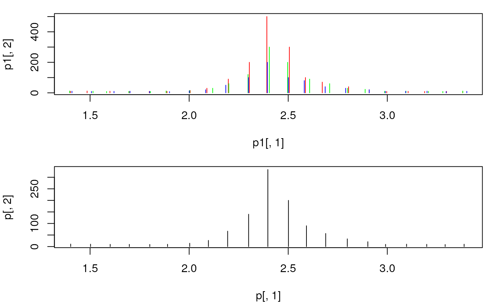

combinePeaks aggregates provided peak matrices into a single peak matrix.
Peaks are grouped by their m/z values with the group() function from the
MsCoreUtils package. In brief, all peaks in all provided spectra are first
ordered by their m/z and consecutively grouped into one group if the
(pairwise) difference between them is smaller than specified with parameter
tolerance and ppm (see group() for grouping details and examples).
The m/z and intensity values for the resulting peak matrix are calculated
using the mzFun and intensityFun on the grouped m/z and intensity values.
The function supports also different strategies for peak combinations which
can be specified with the peaks parameter:
peaks = "union" (default): report all peaks from all input spectra.
peaks = "intersect": keep only peaks in the resulting peak matrix that
are present in >= minProp proportion of input spectra. This would
generate a consensus or representative spectra from a set of e.g.
fragment spectra measured from the same precursor ion.
As a special case it is possible to report only peaks in the resulting
matrix from peak groups that contain a peak from one of the input spectra,
which can be specified with parameter main. Thus, if e.g. main = 2 is
specified, only (grouped) peaks that have a peak in the second input matrix
are returned.
Setting timeDomain to TRUE causes grouping to be performed on the square
root of the m/z values (assuming a TOF instrument was used to create the
data).
combinePeaks( x, intensityFun = base::mean, mzFun = base::mean, weighted = FALSE, tolerance = 0, ppm = 0, timeDomain = FALSE, peaks = c("union", "intersect"), main = integer(), minProp = 0.5, ... )
| x |
|
|---|---|
| intensityFun |
|
| mzFun |
|
| weighted |
|
| tolerance |
|
| ppm |
|
| timeDomain |
|
| peaks |
|
| main | optional |
| minProp |
|
| ... | additional parameters to the |
Peaks matrix with m/z and intensity values representing the aggregated
values across the provided peak matrices.
For general merging of spectra, the tolerance and/or ppm should be
manually specified based on the precision of the MS instrument. Peaks
from spectra with a difference in their m/z being smaller than tolerance
or smaller than ppm of their m/z are grouped into the same final peak.
Some details for the combination of consecutive spectra of an LC-MS run:
The m/z values of the same ion in consecutive scans (spectra) of a LC-MS run
will not be identical. Assuming that this random variation is much smaller
than the resolution of the MS instrument (i.e. the difference between
m/z values within each single spectrum), m/z value groups are defined
across the spectra and those containing m/z values of the main spectrum
are retained.
Intensities and m/z values falling within each of these m/z groups are
aggregated using the intensityFun and mzFun, respectively. It is
highly likely that all QTOF profile data is collected with a timing circuit
that collects data points with regular intervals of time that are then later
converted into m/z values based on the relationship t = k * sqrt(m/z). The
m/z scale is thus non-linear and the m/z scattering (which is in fact caused
by small variations in the time circuit) will thus be different in the lower
and upper m/z scale. m/z-intensity pairs from consecutive scans to be
combined are therefore defined by default on the square root of the m/z
values. With timeDomain = FALSE, the actual m/z values will be used.
Johannes Rainer
set.seed(123) mzs <- seq(1, 20, 0.1) ints1 <- abs(rnorm(length(mzs), 10)) ints1[11:20] <- c(15, 30, 90, 200, 500, 300, 100, 70, 40, 20) # add peak ints2 <- abs(rnorm(length(mzs), 10)) ints2[11:20] <- c(15, 30, 60, 120, 300, 200, 90, 60, 30, 23) ints3 <- abs(rnorm(length(mzs), 10)) ints3[11:20] <- c(13, 20, 50, 100, 200, 100, 80, 40, 30, 20) ## Create the peaks matrices p1 <- cbind(mz = mzs + rnorm(length(mzs), sd = 0.01), intensity = ints1) p2 <- cbind(mz = mzs + rnorm(length(mzs), sd = 0.01), intensity = ints2) p3 <- cbind(mz = mzs + rnorm(length(mzs), sd = 0.009), intensity = ints3) ## Combine the spectra. With `tolerance = 0` and `ppm = 0` only peaks with ## **identical** m/z are combined. The result will be a single spectrum ## containing the *union* of mass peaks from the individual input spectra. p <- combinePeaks(list(p1, p2, p3)) ## Plot the spectra before and after combining par(mfrow = c(2, 1), mar = c(4.3, 4, 1, 1)) plot(p1[, 1], p1[, 2], xlim = range(mzs[5:25]), type = "h", col = "red") points(p2[, 1], p2[, 2], type = "h", col = "green") points(p3[, 1], p3[, 2], type = "h", col = "blue") plot(p[, 1], p[, 2], xlim = range(mzs[5:25]), type = "h", col = "black")## The peaks were not merged, because their m/z differs too much. ## Combine spectra with `tolerance = 0.05`. This will merge all triplets. p <- combinePeaks(list(p1, p2, p3), tolerance = 0.05) ## Plot the spectra before and after combining par(mfrow = c(2, 1), mar = c(4.3, 4, 1, 1)) plot(p1[, 1], p1[, 2], xlim = range(mzs[5:25]), type = "h", col = "red") points(p2[, 1], p2[, 2], type = "h", col = "green") points(p3[, 1], p3[, 2], type = "h", col = "blue") plot(p[, 1], p[, 2], xlim = range(mzs[5:25]), type = "h", col = "black")## With `intensityFun = max` the maximal intensity per peak is reported. p <- combinePeaks(list(p1, p2, p3), tolerance = 0.05, intensityFun = max) ## Create *consensus*/representative spectrum from a set of spectra p1 <- cbind(mz = c(12, 45, 64, 70), intensity = c(10, 20, 30, 40)) p2 <- cbind(mz = c(17, 45.1, 63.9, 70.2), intensity = c(11, 21, 31, 41)) p3 <- cbind(mz = c(12.1, 44.9, 63), intensity = c(12, 22, 32)) ## No mass peaks identical thus consensus peaks are empty combinePeaks(list(p1, p2, p3), peaks = "intersect")#> mz intensity## Reducing the minProp to 0.2. The consensus spectrum will contain all ## peaks combinePeaks(list(p1, p2, p3), peaks = "intersect", minProp = 0.2)#> mz intensity #> [1,] 12.0 10 #> [2,] 12.1 12 #> [3,] 17.0 11 #> [4,] 44.9 22 #> [5,] 45.0 20 #> [6,] 45.1 21 #> [7,] 63.0 32 #> [8,] 63.9 31 #> [9,] 64.0 30 #> [10,] 70.0 40 #> [11,] 70.2 41## With a tolerance of 0.1 mass peaks can be matched across spectra combinePeaks(list(p1, p2, p3), peaks = "intersect", tolerance = 0.1)#> mz intensity #> [1,] 12.05 11.0 #> [2,] 45.00 21.0 #> [3,] 63.95 30.5## Report the minimal m/z and intensity combinePeaks(list(p1, p2, p3), peaks = "intersect", tolerance = 0.1, intensityFun = min, mzFun = min)#> mz intensity #> [1,] 12.0 10 #> [2,] 44.9 20 #> [3,] 63.9 30